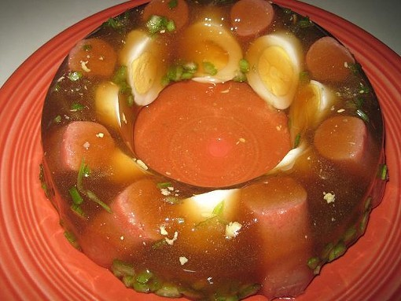

Jellied Bouillon with Frankenfurters

Description
Take a trip back to the '50s with these odd hot dog recipes.
Ingredients
- 2 tablespoons unflavored gelatin
- 1/2 cup cold water
- 3 cups beef stock
- 10 hot dogs
- 3 hard boiled eggs, halved
- 1/2 cup celery, diced
- In a small bowl, combine cold water and gelatin. Pour the mixture into hot beef stock. Whisk well, until well combined.
- Arrange hot dogs, eggs, and celery in a loaf pan. Slowly pour the gelatin mixture to fill the pan. Place in the fridge to chill for about 4 hours, or until completely set.
- Once firm, quickly invert the loaf pan onto a serving platter. Garnish with sliced cucumber.